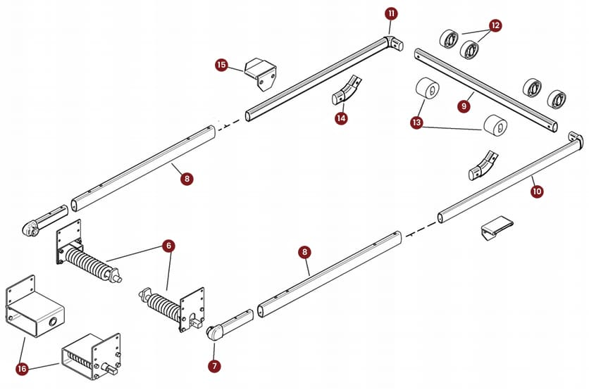

System reference diagram · individual part photo unavailable
Swing arm system / PART #SA14192
Spring underbody assembly — passenger side
Use the part number and diagram reference to discuss a replacement with Precision Tarp. The team will confirm compatibility with your equipment.
Order unitIndividual item
Diagram referenceNo. 16
Pricing and availability are confirmed by the team. This prepares an inquiry; it does not place an order.
Find it in the system.
Look for reference 16 in the drawing. Reference numbers identify diagram positions, not order quantities.
Open full-size diagram